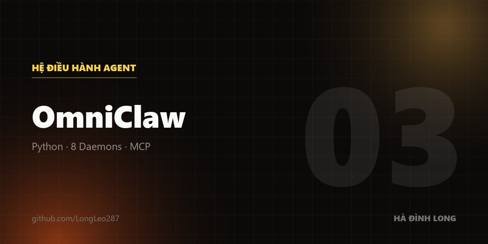

Tính di động tuyệt đối
Tương thích gốc với Claude Code CLI và Google Antigravity. Luật hệ thống được kế thừa ở phạm vi toàn cục, không phải cấu hình lại từng dự án.
Biến máy cá nhân thành một dàn AI tự vận hành, được cai quản bởi 8 daemon chạy nền — không phải mấy con agent "đóng vai nhân viên".

Mỗi công cụ AI lập trình có bộ luật riêng, trí nhớ riêng, và quên sạch sau mỗi phiên. Kết quả là cùng một máy nhưng mỗi công cụ hành xử một kiểu, và không có gì bắt chúng tuân theo kỷ luật chung. OmniClaw đặt một tầng backend không thể né phía dưới tất cả.
Tương thích gốc với Claude Code CLI và Google Antigravity. Luật hệ thống được kế thừa ở phạm vi toàn cục, không phải cấu hình lại từng dự án.
Daemon chạy nền quét cache, dọn file .sqlite và làm sạch commit trước khi đẩy lên GitHub — để khoá API không bao giờ lọt ra ngoài.
Gõ một lệnh `omniclaw` là mở bảng điều khiển trung tâm. Nó tự lo NPM, extension VSCode và các pipeline logic.
Agent ở đây không có "ý chí tự do". Toàn bộ chạy qua một pipeline cứng, được 8 daemon Python canh gác: kiến trúc sư, bộ phân luồng, bộ đăng ký thực thể, bộ thu thập…
Kiến trúc bộ nhớ không gian ba lớp, để ngữ cảnh sống qua nhiều phiên làm việc thay vì bốc hơi mỗi lần đóng cửa sổ.
Toàn bộ mã nguồn, tài liệu và lịch sử phát triển đều công khai trên GitHub.